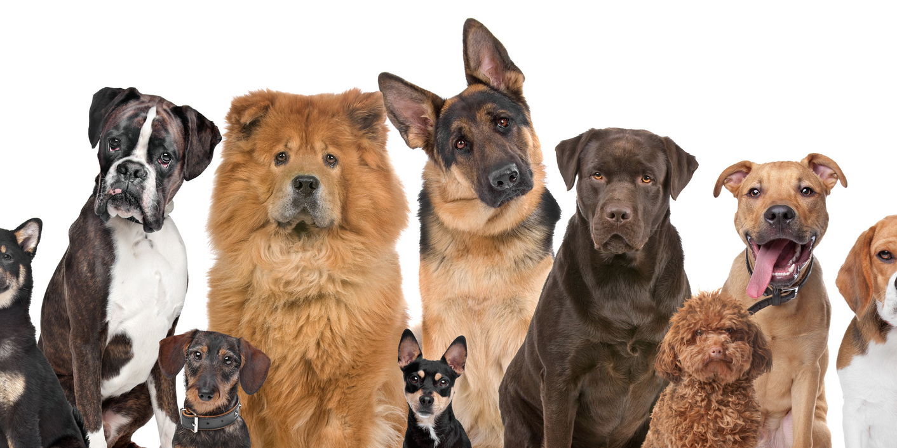

Выбор породы собаки зависит от вашего образа жизни и предпочтений.
Вот несколько советов:
-
Лабрадор-ретривер подходит для семей с детьми, активных людей и тех,
кто ищет дружелюбную и умную собаку.
-
Немецкая овчарка - отличный выбор для опытных владельцев, желающих
иметь верного и обучаемого компаньона.
-
Золотистый ретривер идеален для семей с детьми, любителей активного
отдыха и тех, кто ищет преданного и дружелюбного друга.
При выборе породы учитывайте свой образ жизни, уровень активности и
готовность уделять время воспитанию и обучению собаки.